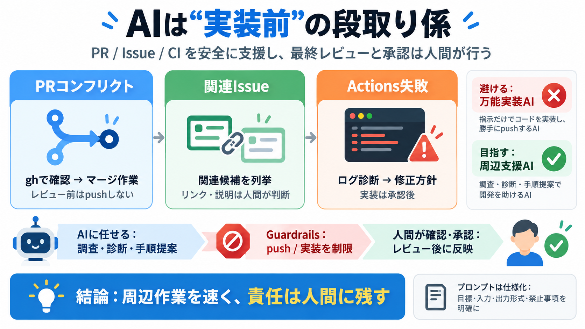

AI Agents Struggle with Git Merge Conflicts – Exploring Git Productivity Tools
The original post by filip-be on January 27, 2026, brought to light a common frustration. A pull request (PR) opened by …

The original post by filip-be on January 27, 2026, brought to light a common frustration. A pull request (PR) opened by …
# GitHub Agentic Workflows: Automation That Actually Reads the Room ## Microsoft Reactor 163000 subscribers 98 likes ##…
GitHub Agentic Workflows and Continuous AI are designed to augment existing CI/CD rather than replace it. They do not re…
💡 What you’ll learn: 🔘 How to automate root cause analysis in CI/CD pipelines 🔘 Using Copilot Coding Agent to fix …
| The pattern that has worked best for me is to treat every coding agent as an untrusted contributor, not as an automate…